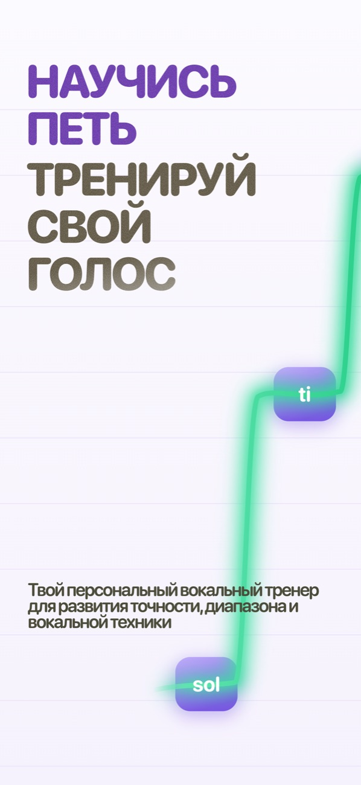
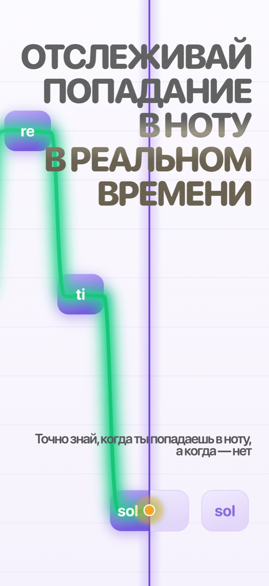
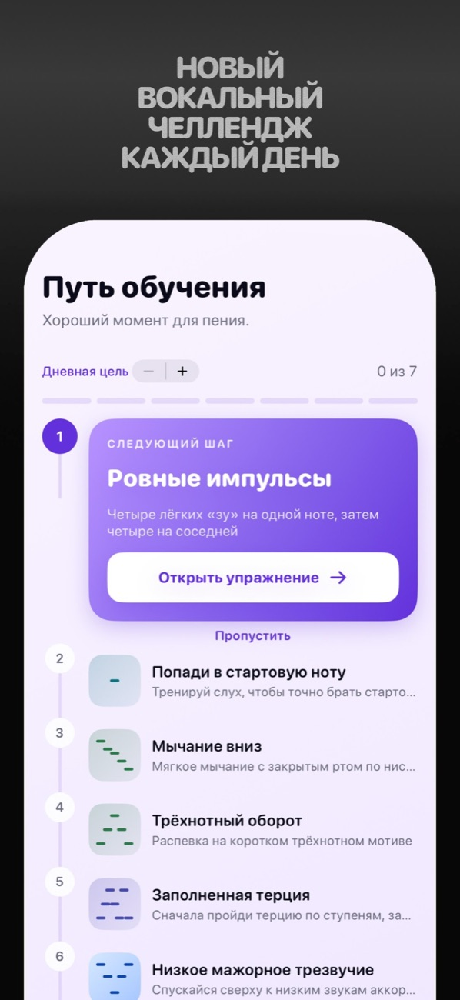
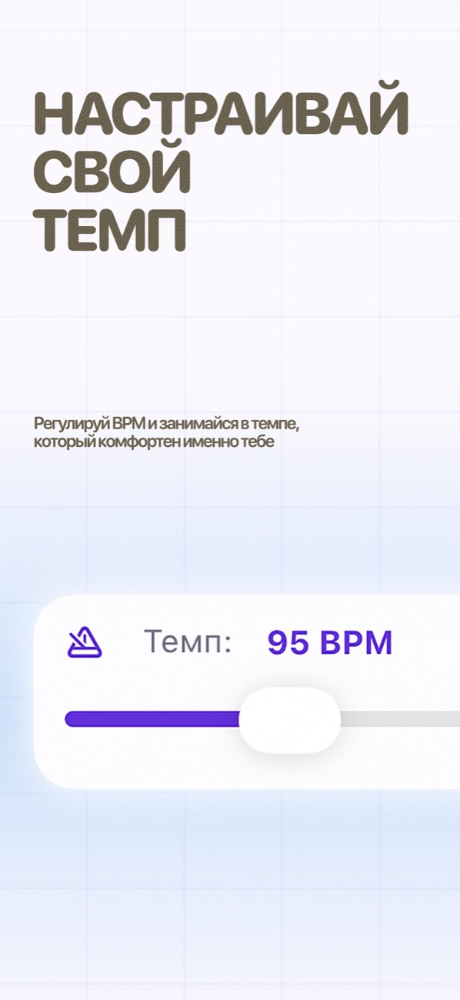

Фокус-упражнение
Canu выделяет место, где ты сбиваешься, даёт подводящие ноты, а затем предлагает спеть всё упражнение ещё раз.
Canu — твой личный вокальный тренер. Учись уверенно попадать в ноты, развивай голос и пой свободнее. Шаг за шагом.
Canu выделяет место, где ты сбиваешься, даёт подводящие ноты, а затем предлагает спеть всё упражнение ещё раз.
Смотри, какую ноту ты поёшь и насколько точно в неё попадаешь.
Измерь свой диапазон вживую и узнай свой тип голоса.
Начни с двух распевок и выстрой привычку с меняющимися упражнениями.
После каждого упражнения видно, что стало лучше и какое место отработать дальше.
Составляй гаммы и последовательности нот, выбирай ноты и темп и сохраняй их. Canu Boogie — готовый пример, который можно изменить.
Неделя занятий на нотном стане, с минутами практики за каждый день.
Интонация, развитие слуха, подвижность, артикуляция, дыхание и другое.
Меняй BPM, чтобы замедлить трудное упражнение или постепенно ускориться.
Выбери оформление по вкусу или включи автоматическую смену.




Голос развивается с практикой.
Кратко опиши вопрос. Мы ответим как можно скорее и используем твои данные только для обработки обращения.
Чтобы мы могли помочь: укажи устройство, версию iOS, версию приложения и кратко опиши проблему. Снимок экрана часто помогает.
Canu нужен доступ к микрофону. Разреши его в Настройках iPhone, в разделе Canu. Занимайся в тихой комнате и не закрывай микрофон.
Canu записывает, только если ты включишь запись. Записи остаются на устройстве, их можно удалить в приложении. Прослушивание, сравнение, сохранение и отправка входят в Canu Pro.
Покупки оформляются через Apple ID. На экране Pro в Canu нажми «Восстановить подписку». Управлять подпиской и отменить её можно в настройках Apple ID.
Только с твоего согласия: данные об использовании отправляются в Google Analytics, отчёты об ошибках — в Firebase Crashlytics. Каждую функцию можно отключить отдельно в настройках Canu: «Делиться данными» и «Отчёты об ошибках». Аудио не передаётся.
Выбери регион, в котором ты пользуешься Canu.